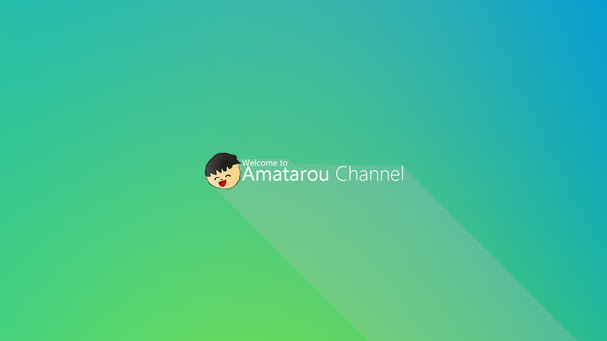

Amatarouのページへようこそ

※この画像はAmatarouチャンネルへリンクされています※このページを参考にする際は以下の項目をhtmlに記述してください
Amatarouとは?
ただパソコンが好きな人です。自由にプログラムを書いたり、動画を作成したりしている人です。
レベルは低いかもしれませんが、温かい目で見守っていてください。
下の埋め込み動画をご覧ください
しょうもない感じですが、それくらいが個人的には気軽で活動しやすいのです